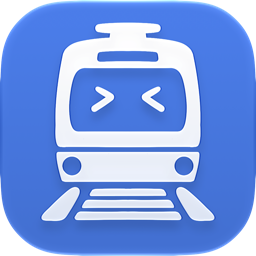
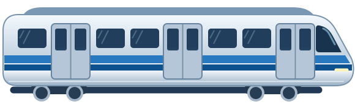

Perjalanan
Dari stasiun awal ke tujuan sehari-hari.

MoobbyRute KRL, urutan stasiun, dan alternatif dalam satu timeline.
Lihat tampilan Moobby
pilih rute lihat urutan stasiun
kenali gangguan cek dampaknya
pertimbangkan alternatif lanjutkan perjalanan
Dari stasiun awal ke tujuan sehari-hari.
Informasi perjalanan dalam satu tampilan.
Opsi saat perjalanan perlu disesuaikan.
Moobby membantu kamu menyimpan rute harian dan melihat urutan stasiun KRL dalam satu timeline perjalanan.
Layar Moobby di halaman ini menampilkan rute Green Line dari Cisauk ke Kebayoran.
Buka Moobby untuk mengecek kondisi perjalanan. Status dan waktu di halaman ini berasal dari cuplikan tampilan aplikasi.
Kamu bisa memilih stasiun secara manual. Izin lokasi membantu Moobby mengenali stasiun di sekitarmu.
Buka detail gangguan untuk melihat dampaknya pada perjalanan dan mempertimbangkan opsi perjalanan lain.